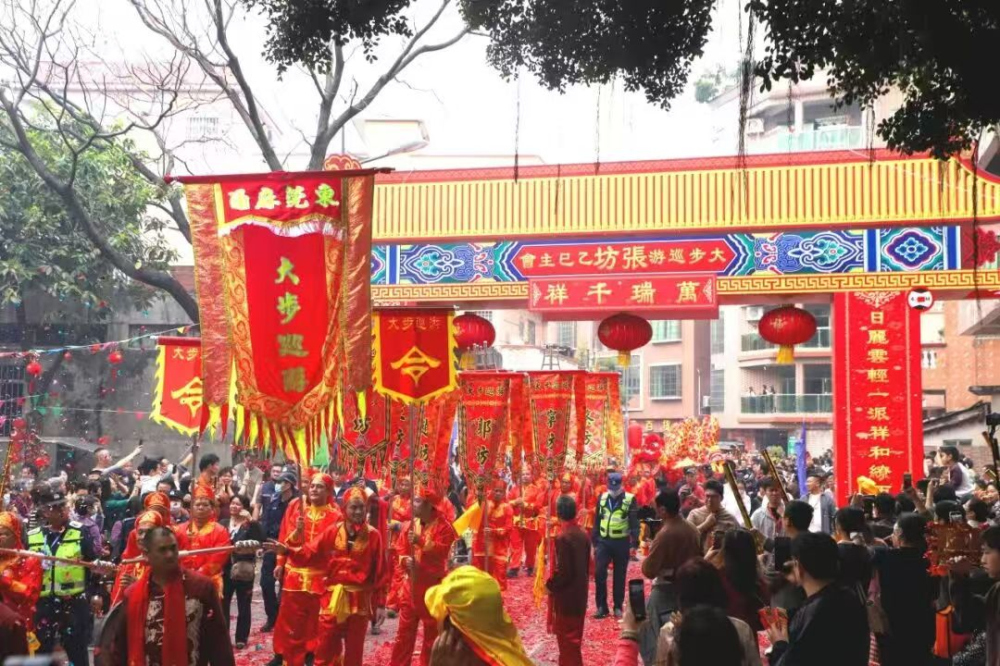
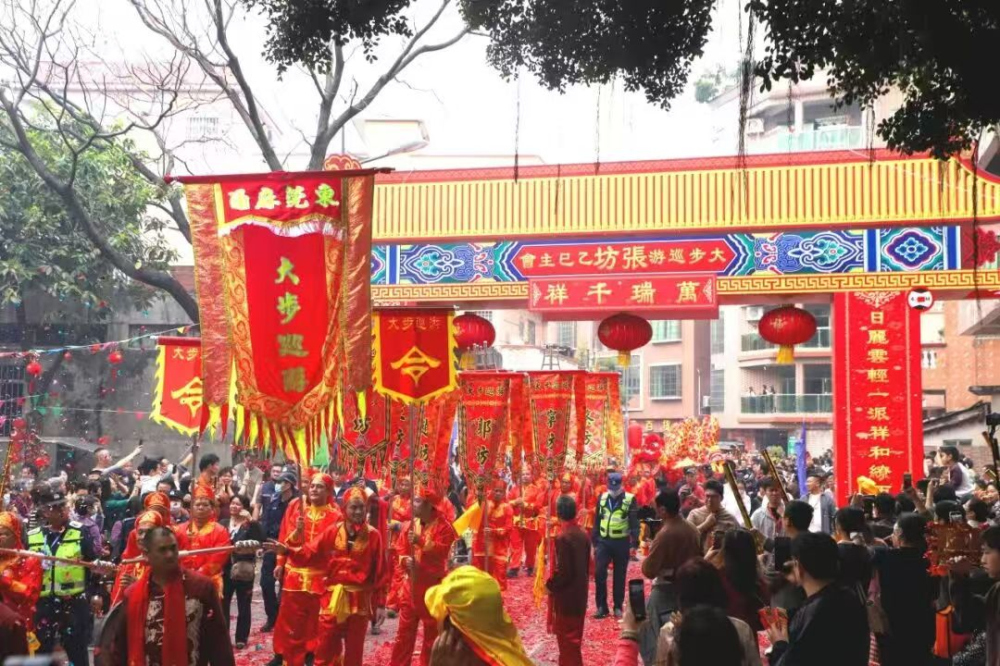

大步巡游是广东省省级非物质文化遗产。每年农历正月十九，东莞麻涌镇大步村的张、郭、王、宁、赵、蔡、彭七个坊的村民都会欢聚一堂，举行规模宏大的环村巡游活动。
巡游不仅是热闹的仪式，更是一种跨越代际的共同记忆：队伍、锣鼓、龙狮与彩旗，把“坊”的凝聚力与乡土认同感串联在一起。
穿越明朝的民俗盛会 · 麻涌大步的精神纽带
大步巡游是广东省省级非物质文化遗产。每年农历正月十九，东莞麻涌镇大步村的张、郭、王、宁、赵、蔡、彭七个坊的村民都会欢聚一堂，举行规模宏大的环村巡游活动。
巡游不仅是热闹的仪式，更是一种跨越代际的共同记忆：队伍、锣鼓、龙狮与彩旗，把“坊”的凝聚力与乡土认同感串联在一起。
大步巡游起源于明朝，最初是各屯士兵为了维护治安而形成的轮值巡查制度。随着历史演变，它逐渐演变成祈求风调雨顺、国泰民安的民间传统。巡游队伍中设有“头阵”、“祈福方阵”、“龙狮队”等六大方阵，气势磅礴。